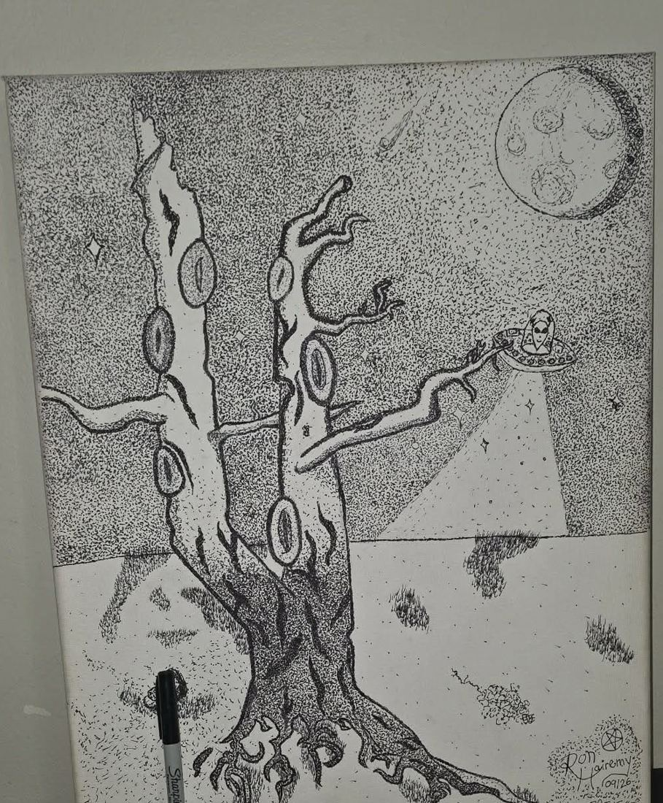

Latest finished pointillism

anxieTREE 3.0
The full realization, the third of three ~125-hour anxieTREE versions: the eye-hollowed tree, the beam, the cratered moon. Drawn against the anxiety, finished for the room. This canvas sold at a silent auction at Cristopher Ryan (Oddiologist)’s memorial show, helping his family cover funeral costs.
On the canvas now: the 18×24″ MANAIA redo, 35+ hours in, linework done, colour next.
View the pointillism gallery →